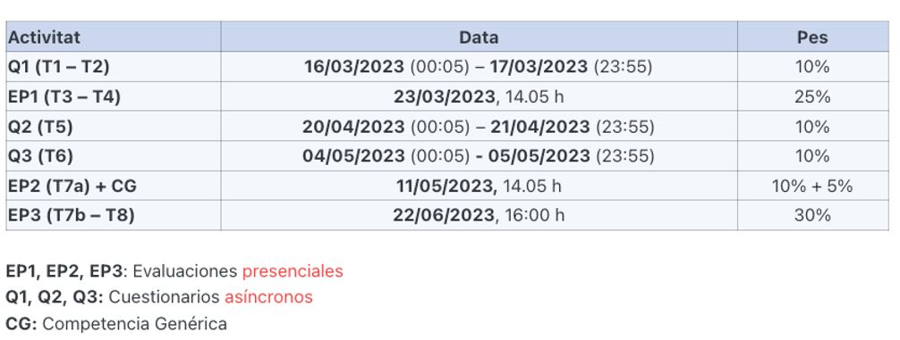

Estadística
2023-02-13
Chapter 1 Objetivo
Este es el curso de introducción a la estadística de la EEBE (UPC).
La estadística es un lenguaje que permite afrontar problemas nuevos, sobre los que no tenemos solución, y en donde interviene la aleatoridad.
En este curso trataremos los conceptos fundamentales de estadística.
3 horas de teoría por semana: Explicaremos los conceptos, haremos ejercicios.
6 horas de estudio individual por semana: Notas notas de curso y los recursos en ATENEA.
2 horas de Solución de problemas con R: Sesiones presenciales con ordenador (Prácticas).
Las fechas de exámenes y material de estudio adicional se pueden encontrar en ATENEA metacurso:

coordinadores:
- Luis Mujica (luis.eduardo.mujica@upc.edu)
- Pablo Buenestado (pablo.buenestado@upc.edu)